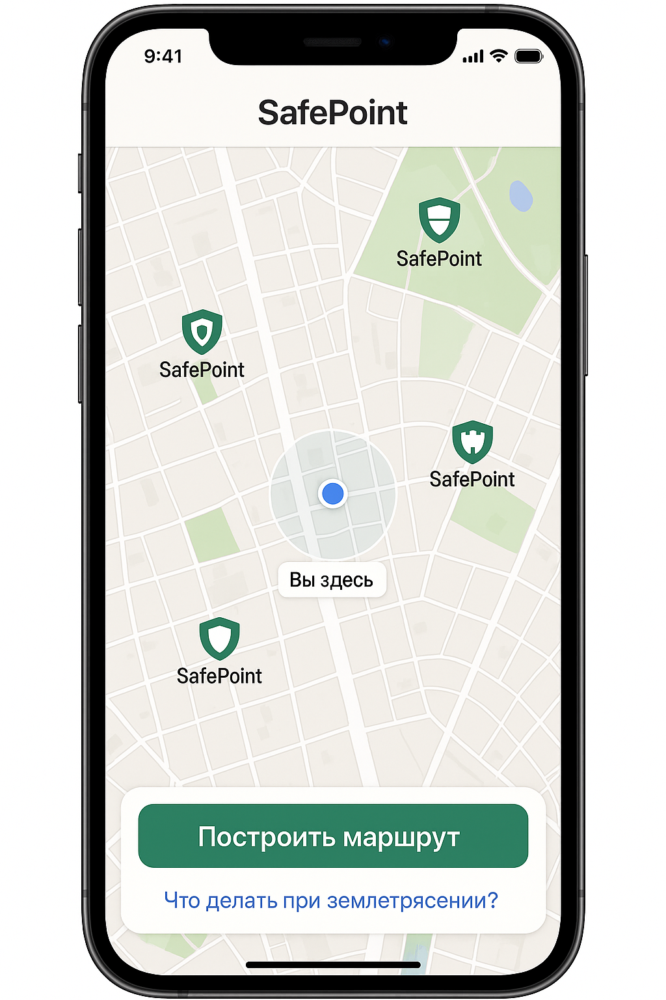

The Problem
Kazakhstan is a seismically active region. Cities like Almaty, Taraz, and Shymkent are prone to frequent earthquakes. In critical moments, people need a simple, intuitive tool.
- 82% Do not know where to run during an earthquake.
- 18% Know where to run.
Panic = Losses: When people do not know where to go, they get lost, panic, and make mistakes. There are no clear signs or instructions on where to go on the streets or in schools.


The Solution
SafePoint is a digital assistant that helps people quickly orient themselves. The application automatically determines the location and shows the nearest safe evacuation points: parks, stadiums, and open areas.
- Builds a pedestrian route taking into account city infrastructure (streets, obstacles).
- Provides offline access to maps and instructions without internet.
- Forms a useful habit among residents — knowing where to go in case of danger.
System Architecture & Engineering Design
The primary engineering challenge is routing during emergencies when cellular networks fail. SafePoint uses an Offline-First architecture.
- Technology Stack (MVP): React Native / Progressive Web App (PWA) with Service Workers for caching.
- Mapping: Mapbox GL or Leaflet.js utilizing local vector tiles downloaded in the background when the connection is stable.
- Local Database: SQLite / IndexedDB to store geospatial coordinates of safe zones and emergency action algorithms.
- Emergency Routing Flow: The app queries the local database via spatial indexes (R-Tree) to find nearest safe zones, filters out paths blocked by hazardous infrastructure, and calculates the optimal route locally using A* or Dijkstra algorithms.
Implementation Roadmap
- Customer Development: Conducted surveys to identify "blind spots" in emergency awareness.
- MVP Development: Designing the offline-first interactive map and stress-accessible UI.
- Field QA Testing: Planned simulation of an earthquake scenario with a focus group to test app usability under stress and validate the accuracy of routing algorithms.
Developed as a concept for the Samsung Solve for Tomorrow 2025 competition.
Team 191 | 191 School named after Gabiden Mustafin, Almaty.
Project led by Team Captain: Darkhan Zairov.